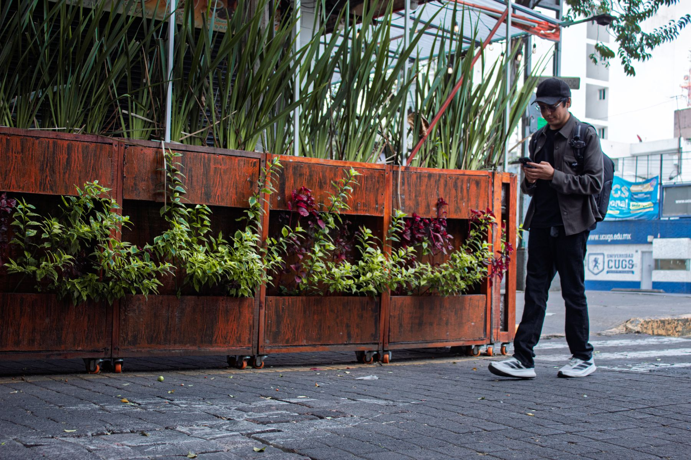
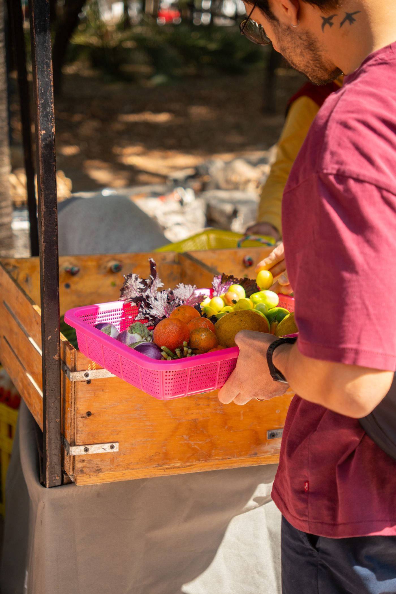

Préstamos personales en México
Préstamos desde
$100 MXN
Para ese gasto que necesitas resolver. Revisa tu oferta y el total a pagar antes de aceptar.
Montos de $100 a $50,000 MXN, según tu evaluación crediticia.
Descargar ALA para solicitar Ya tengo un préstamo Pagos y ayuda
¿Qué necesitas para solicitar?
Ten a la mano tus documentos y revisa si cumples las condiciones.
Identificación vigente
Tu identificación oficial INE o IFE.
Cuenta bancaria propia
Debe estar a nombre de quien solicita.
Ser mayor de edad
Y contar con nacionalidad mexicana.
Cumplir con los requisitos no garantiza la aprobación. Cada solicitud se evalúa de forma individual.
Pide tu préstamo, paso a paso.
Desde la app de ALA, con tu celular.
- 1
Descarga ALA
Encuentra la app en Google Play o App Store y regístrate con tu número de teléfono.
- 2
Envía tu solicitud
Completa tus datos y proporciona tu identificación y una cuenta bancaria a tu nombre.
- 3
Revisa tu oferta
Si tu solicitud es aprobada, revisa el monto, las fechas y el total a pagar antes de aceptar.
Antes de aceptar,
revisa cuánto vas a pagar.
Consulta las condiciones de tu oferta.
El total depende del préstamo aprobado.
Información del préstamo
- Monto
- $100–$50,000 MXN
- Plazo
- 61–154 días
- Tasa diaria desde
- 0.1% (36% anual)
- CAT promedio
- 548.61% sin IVA
CAT calculado al 30 de junio de 2026. Para fines informativos y de comparación.
Consultar el contratoUn ejemplo para entenderlo
Si pides $5,000 MXN
a 61 días…
Ejemplo representativo con tasa diaria de 0.1%. Tu oferta puede ser diferente. Revisa el costo total y considera tu capacidad de pago.
¿Ya tienes
un préstamo?
En la app, entra a Mi cuenta → Mis préstamos para consultar tu saldo y fecha de pago.
Resolvamos tus dudas.
Ir al centro de ayuda¿Cuánto me pueden prestar?
ALA ofrece montos de $100 a $50,000 MXN. La cantidad disponible depende de la evaluación de tu solicitud. El límite máximo no es una promesa de aprobación ni del monto de tu primer préstamo.
¿Dónde veo cuánto voy a pagar?
Revisa el monto, el plazo, los intereses, el IVA y el total a pagar en tu oferta y contrato, antes de aceptar.
Ver información de costos¿La solicitud garantiza que me aprueben?
No. Cada solicitud se evalúa de forma individual. Cumplir con los requisitos no garantiza la aprobación ni un monto específico.
¿Cómo sé si un mensaje es de ALA?
Compara los datos del contacto con nuestros canales oficiales antes de compartir información o realizar un pago. Si algo no coincide, consulta directamente a atención a clientes.
Ver canales oficialesVerifica que estás
hablando con ALA.
Nuestro sitio oficial es alaprestamo.com. Antes de compartir tus datos, revisa con quién te estás comunicando.
Consultar canales oficialesQuantum Wealth Solutions,
S.A.P.I. de C.V., SOFOM E.N.R.
Consultar en SIPRES (abre en otra pestaña)Consultar aviso de privacidadConocer más de ALAConsejos para tu bolsillo.
Ver todas las guías
¿Cuánto puedes pagar sin desajustarte?
Revisa tu presupuesto antes de elegir un préstamo.
Leer la guía
¿Qué pasa si te atrasas con un pago?
Encuentra orientación y canales de ayuda.
Leer la guíaQué revisar en un préstamo en línea.
Aprende qué revisar y cómo reconocer señales de riesgo.
Leer la guía